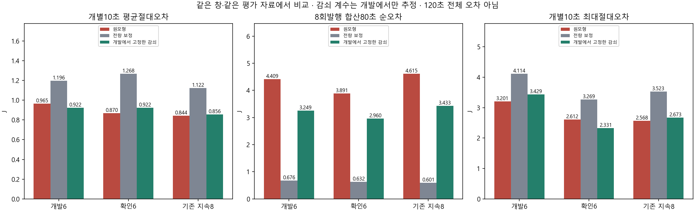
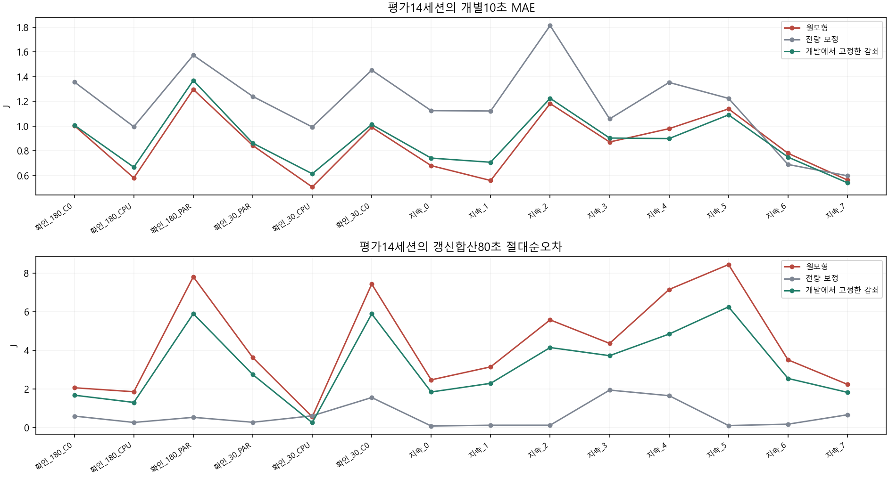

모형계수/기한/보상/정책/AP·실측을변경하지않은별도PC에너지보정한구조다. 평가결과로alpha를다시고르지않았다. 이미본자료사후평가·정확도PASS/실제절감미검증.
범위·재현 · 개발동결/교차평가 · 20세션 악화 · 480계산행
| 자료 | 역할 | 방식 | 세션 | 10초MAE J | 합산80초MAE J | 10초악화 | 합산악화 |
|---|---|---|---|---|---|---|---|
| history | development | FROZEN | 6 | 0.9647024932944133 | 4.408840961151833 | 0 | 0 |
| history | development | FULL_CORRECTION | 6 | 1.1964179588894952 | 0.6758886275832653 | 4 | 1 |
| history | development | DEV_MAE_SHRINK | 6 | 0.9215948082691058 | 3.248588947627104 | 4 | 1 |
| history | confirmation | FROZEN | 6 | 0.8695698563767069 | 3.8914045892994085 | 0 | 0 |
| history | confirmation | FULL_CORRECTION | 6 | 1.2677452677971424 | 0.6319218857589796 | 6 | 1 |
| history | confirmation | DEV_MAE_SHRINK | 6 | 0.9215210167824244 | 2.959748731246417 | 6 | 0 |
| sustained | evaluation | FROZEN | 8 | 0.8437052997823998 | 4.614531371007804 | 0 | 0 |
| sustained | evaluation | FULL_CORRECTION | 8 | 1.1221723394134702 | 0.6012288289580772 | 7 | 0 |
| sustained | evaluation | DEV_MAE_SHRINK | 8 | 0.8563442320568 | 3.4334702631335245 | 4 | 0 |

